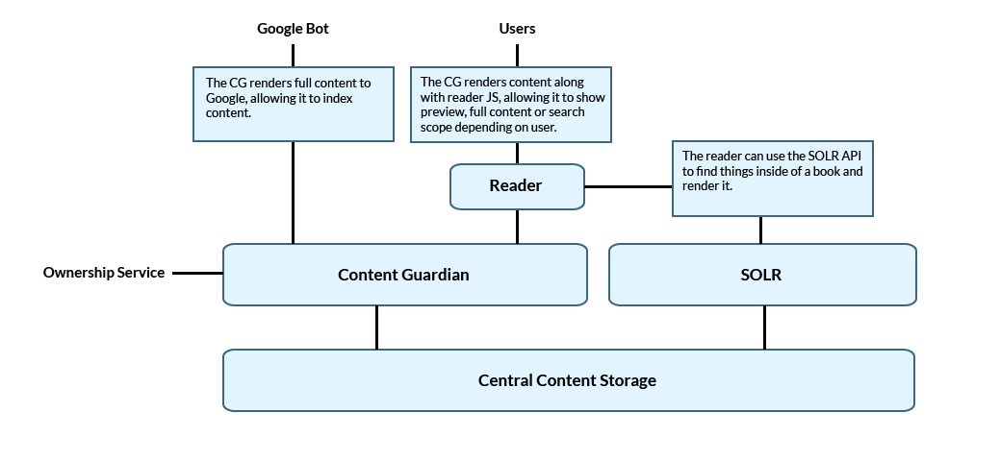

This document describes the business requirements documents for the “Atlas Reader” project. The key elements in the system are:
Content Storage. A central storage location for content that will be served by the Content Guardian or the SOLR API. We will store only HTML build output from Atlas or EPUB.
Content Guardian. An API with agreed-upon URLs that controls access to content for Google, Google visitors, or logged-in Janrain users.
Atlas Reader. A javascript library that is sent to"real” users from the Content Guardian to render an in-browser reader.
SOLR. An index layer that will provide a search API to the Content Storage layer.
The following figure illustrates the relationship among these and other elements:

Basic architecture of the new reading experience.